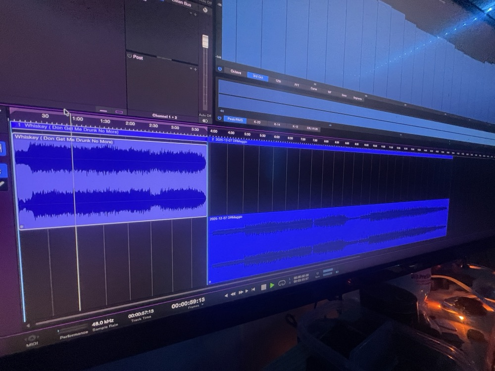
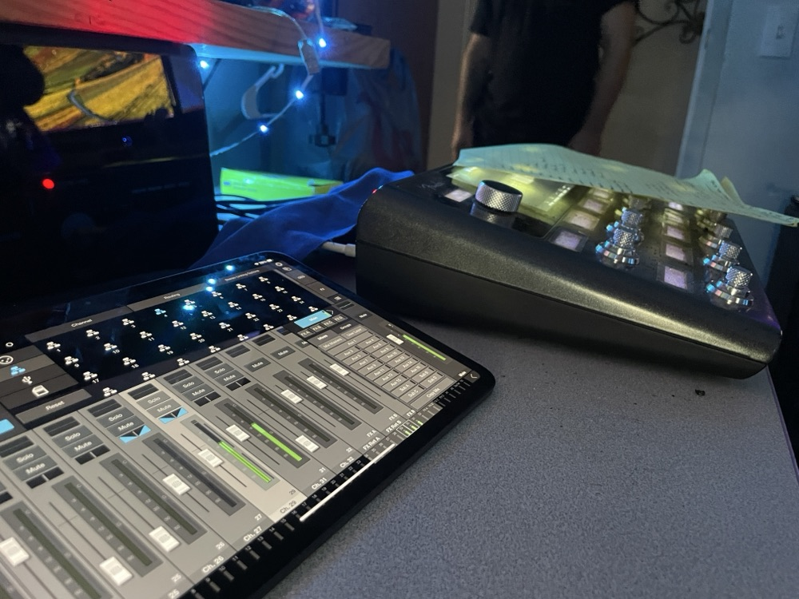

Audio Setup + Troubleshooting
Help with interfaces, microphones, speakers, headphones, routing, DAW setup, livestream audio, podcast setups, and basic recording workflows.
Studio Support / Satellite Support
Leaning Studios provides practical remote and in-person support for audio setup, troubleshooting, project prep, session organization, media cleanup, and recurring audio workflows.
Purpose
Leaning Studios Studio Support is for individuals, creators, producers, studios, churches, businesses, and media teams that need help with audio setup, troubleshooting, project files, session prep, or recurring production support.
Support can be remote or in-person depending on the need. Remote Support is available for smaller questions, troubleshooting, setup help, and simple project support. Any in-person visit starts at a $200 minimum.


Who This Is For
Studio Support is built for people and teams that need practical audio help without turning every issue into a full production booking.
Support Areas
Help with interfaces, microphones, speakers, headphones, routing, DAW setup, livestream audio, podcast setups, and basic recording workflows.
Support for session organization, file cleanup, mix prep, vocal comping, editing, export prep, stems, and handoff notes.
Support for recurring audio/media workflows, livestream audio paths, service recording workflows, podcast cleanup, volunteer notes, and repeatable delivery processes.
Support for larger project prep, recurring session cleanup, producer handoff work, vocal comping, mix prep, and organized delivery.
Monthly or recurring support for studios, producers, churches, labels, media teams, and organizations with repeat audio/media needs.
Support Packages
Choose the support path based on what you need help with. Pricing is based on scope, time, location, and whether the work is remote, in-person, one-time, or recurring.
Package 1
Starts at $50
For quick audio troubleshooting, setup questions, DAW help, routing issues, export support, screen-share guidance, and smaller remote project or session support.
Package 2
Starts at $100
For project setup, file organization, session cleanup, export prep, stems, mix prep, vocal comping support, handoff notes, and smaller project/session help.
Package 3
Starts at $200
For one-time setup, project, or in-person support. Good for home studios, churches, podcast rooms, creators, businesses, local engineering help, and practical audio/media troubleshooting.
Package 4
Quoted by scope
For recurring, larger-scale, or higher-responsibility audio/media support. Good for studios, producers, churches, labels, media teams, production companies, and organizations with repeat support needs.
Booking + Payment
A 30% non-refundable booking deposit is required to reserve support work. The deposit is applied toward the total quoted price and secures scheduling, preparation, and availability.
Remote Support is paid before or at the start of the session. In-Person Support requires the remaining balance of the $200 minimum before work begins. Partner Support payment terms are confirmed in the approved quote or recurring support agreement.
In-Person Support
Any in-person visit starts at a $200 minimum. This applies to home visits, studio visits, church visits, business visits, podcast room visits, media room visits, troubleshooting visits, and local engineering support.
In-person support is quoted based on scope, location, timing, and support type.
How It Works
Submit the support request with the issue, setup, project, deadline, and whether you need remote, project, in-person, or partner support.
Leaning Studios reviews the request and routes it to Remote Support, Project Support, In-Person Support, Partner Support, or Web Systems if the request is outside audio/media support.
The support scope, price, timing, and deposit are confirmed before work is scheduled.
Support is completed remotely, in-person, or through project/file delivery depending on the approved scope.
Leaning Studios provides closeout notes when appropriate and recommends the next step if recurring support would be useful.
Audio Support vs. Web Systems
Leaning Studios Studio Support is focused on audio/media support.
Requests involving websites, intake forms, automation, dashboards, CRM-style systems, business workflow infrastructure, or non-audio systems are handled separately through Web Systems.
This keeps audio support and business systems work scoped clearly.
Service Boundaries
Leaning Studios provides defined audio/media support, not unlimited access. Studio Support does not include electrical work, construction, hardware repair, unsafe installation work, unlimited revisions, 24/7 emergency response, full-time staff replacement, unpaid extra work, or business systems work handled by Web Systems.
Leaning Studios protects original files, avoids risky updates during active projects unless scoped and approved, pauses for scope changes, documents boundaries, and declines unsafe or licensed work.
Privacy + File Handling
Client information, project files, support records, access details, photos, screenshots, and private communications are treated as confidential by default.
Leaning Studios collects only what is needed to review and provide support. Client names, photos, screenshots, testimonials, project files, or support examples are not used publicly without permission.
View Privacy PolicyFinal CTA
Send the details and Leaning Studios will review the best support path.
Whether you need a quick remote fix, project support, an in-person visit, or recurring Partner Support, the first step is a clear support request.